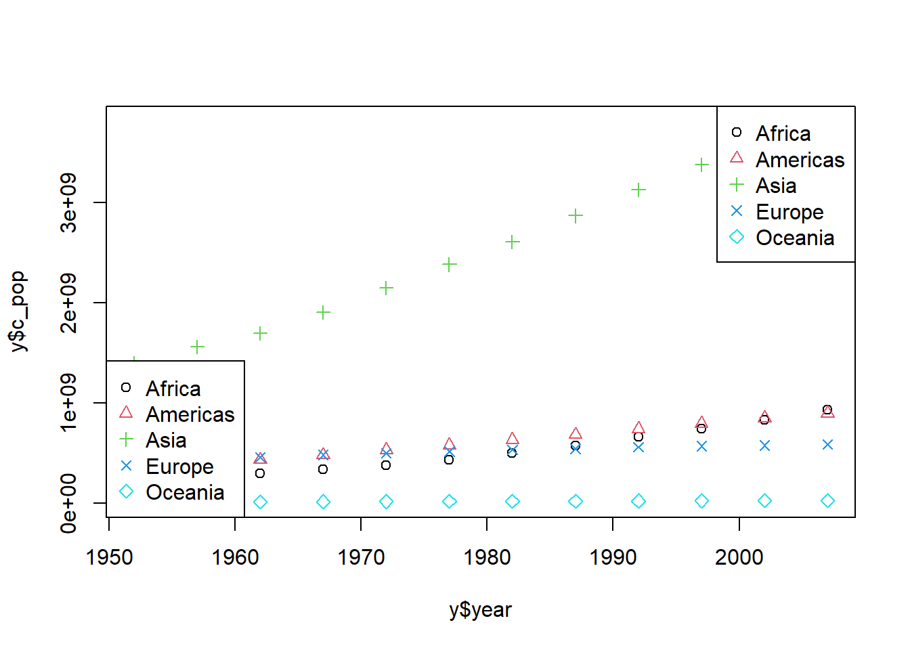

# Data Visualization
# average
apply(anscombe, 1, mean) [1] 8.65250 7.45250 10.47125 8.56625 9.35875 10.49250 6.33750 7.03125
[9] 9.71000 6.92625 5.75500apply(anscombe, 2, mean) x1 x2 x3 x4 y1 y2 y3 y4
9.000000 9.000000 9.000000 9.000000 7.500909 7.500909 7.500000 7.500909 # Dispersion
apply(anscombe, 2, var) x1 x2 x3 x4 y1 y2 y3 y4
11.000000 11.000000 11.000000 11.000000 4.127269 4.127629 4.122620 4.123249 # Correlation (correlation coefficient)
cor(anscombe$x1, anscombe$y1)[1] 0.8164205cor(anscombe$x2, anscombe$y2)[1] 0.8162365cor(anscombe$x3, anscombe$y3)[1] 0.8162867cor(anscombe$x4, anscombe$y4)[1] 0.8165214library(gapminder)
library(dplyr)
Attaching package: 'dplyr'The following objects are masked from 'package:stats':
filter, lagThe following objects are masked from 'package:base':
intersect, setdiff, setequal, uniony <- gapminder %>% group_by(year, continent) %>% summarize(c_pop = sum(pop))`summarise()` has grouped output by 'year'. You can override using the
`.groups` argument.head(y, 20)# A tibble: 20 × 3
# Groups: year [4]
year continent c_pop
<int> <fct> <dbl>
1 1952 Africa 237640501
2 1952 Americas 345152446
3 1952 Asia 1395357351
4 1952 Europe 418120846
5 1952 Oceania 10686006
6 1957 Africa 264837738
7 1957 Americas 386953916
8 1957 Asia 1562780599
9 1957 Europe 437890351
10 1957 Oceania 11941976
11 1962 Africa 296516865
12 1962 Americas 433270254
13 1962 Asia 1696357182
14 1962 Europe 460355155
15 1962 Oceania 13283518
16 1967 Africa 335289489
17 1967 Americas 480746623
18 1967 Asia 1905662900
19 1967 Europe 481178958
20 1967 Oceania 14600414plot(y$year, y$c_pop)
plot(y$year, y$c_pop, col = y$continent)
plot(y$year, y$c_pop, col = y$continent, pch = c(1:5))
plot(y$year, y$c_pop, col = y$continent, pch = c(1:length(levels(y$continent))))
# Specify the number of legends as a number
legend("topright", legend = levels((y$continent)), pch = c(1:5), col = c(1:5))
# Specify the number of legends to match the number of data
legend("bottomleft", legend = levels((y$continent)), pch = c(1:length(levels(y$continent))), col = c(1:length(levels(y$continent))) )
# 02 Basic features of visualization #
plot(gapminder$gdpPercap, gapminder$lifeExp, col = gapminder$continent)
legend("bottomright",
legend = levels((gapminder$continent)),
pch = c(1:length(levels(gapminder$continent))),
col = c(1:length(levels(y$continent))))plot(log10(gapminder$gdpPercap), gapminder$lifeExp, col = gapminder$continent)
legend("bottomright", legend = levels((gapminder$continent)), pch = c(1:length(levels(gapminder$continent))), col = c(1:length(levels(y$continent))) )
# install.packages("ggplot2")
library(ggplot2)
gapminder %>% ggplot(,aes())
ggplot(gapminder, aes(x = gdpPercap, y = lifeExp, col = continent)) +
geom_point() +
scale_x_log10()ggplot(gapminder, aes(x = gdpPercap, y = lifeExp, col = continent, size = pop)) +
geom_point() +
scale_x_log10()ggplot(gapminder, aes(x = gdpPercap, y = lifeExp, col = continent, size = pop)) +
geom_point(alpha = 0.5) +
scale_x_log10()
table(gapminder$year)
1952 1957 1962 1967 1972 1977 1982 1987 1992 1997 2002 2007
142 142 142 142 142 142 142 142 142 142 142 142 gapminder %>% filter(year==1977) %>%
ggplot(., aes(x=gdpPercap, y=lifeExp, col=continent, size=pop)) +
geom_point(alpha=0.5) +
scale_x_log10()
gapminder %>% filter(year==2007) %>%
ggplot(., aes(x=gdpPercap, y=lifeExp, col=continent, size=pop)) +
geom_point(alpha=0.5) +
scale_x_log10()
ggplot(gapminder, aes(x=gdpPercap, y=lifeExp, col=continent, size=pop)) +
geom_point(alpha=0.5) +
scale_x_log10() +
facet_wrap(~year)
gapminder %>%
filter(year == 1952 & continent =="Asia") %>%
ggplot(aes(reorder(country, pop), pop)) +
geom_bar(stat = "identity") +
coord_flip()
gapminder %>% filter(year==1952 & continent== "Asia") %>% ggplot(aes(reorder(country, pop), pop)) + geom_bar(stat = "identity") + scale_y_log10() + coord_flip ()gapminder %>%
filter(country == "Korea, Rep.") %>%
ggplot(aes(year, lifeExp, col = country)) +
geom_point() +
geom_line()
gapminder %>%
filter(country == "Korea, Rep.") %>%
ggplot(aes(year, lifeExp, col = country)) +
# geom_point() +
geom_line()
gapminder %>%
ggplot(aes(x = year, y = lifeExp, col = continent)) +
geom_point(alpha = 0.2) +
geom_smooth()`geom_smooth()` using method = 'loess' and formula = 'y ~ x'x = filter(gapminder, year == 1952)
hist(x$lifeExp, main = "Histogram of lifeExp in 1952")
x %>% ggplot(aes(lifeExp)) + geom_histogram()`stat_bin()` using `bins = 30`. Pick better value with `binwidth`.
x %>% ggplot(aes(continent, lifeExp)) + geom_boxplot()
plot(log10(gapminder$gdpPercap), gapminder$lifeExp)